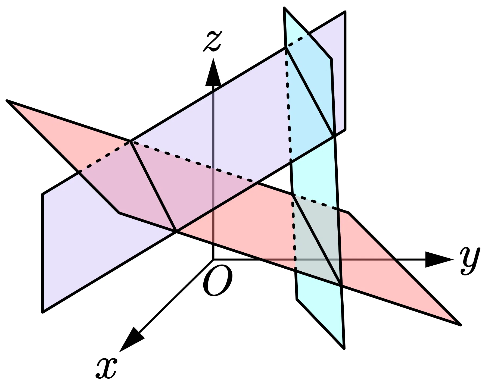
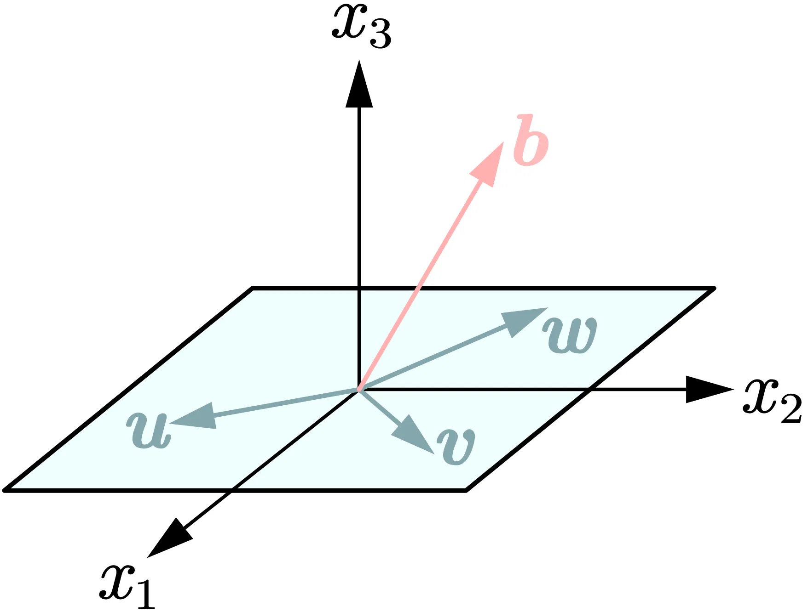
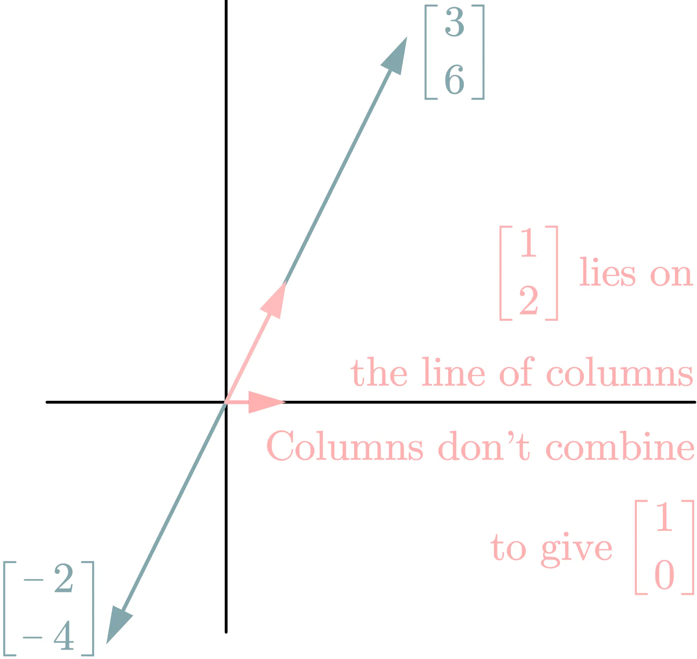

# Problem Set 2.1
Find the two components of A x A \boldsymbol{x} A x
[ 2 3 5 1 ] [ 4 2 ] and [ 3 6 6 12 ] [ 2 − 1 ] and [ 1 2 4 2 0 1 ] [ 3 1 1 ] . \begin{bmatrix}2 & 3 \\ 5 & 1\end{bmatrix}\begin{bmatrix}4 \\ 2\end{bmatrix} \quad \text{and} \quad \begin{bmatrix}3 & 6 \\ 6 & 12\end{bmatrix} \begin{bmatrix} 2 \\ -1\end{bmatrix} \quad \text{and} \quad \begin{bmatrix}1 & 2 & 4 \\ 2 & 0 & 1\end{bmatrix}\begin{bmatrix}3 \\ 1 \\ 1\end{bmatrix}.
[ 2 5 3 1 ] [ 4 2 ] and [ 3 6 6 12 ] [ 2 − 1 ] and [ 1 2 2 0 4 1 ] 3 1 1 .
Solution
[ 2 3 5 1 ] [ 4 2 ] = [ 2 ⋅ 4 + 3 ⋅ 2 5 ⋅ 4 + 1 ⋅ 2 ] = [ 14 22 ] \begin{bmatrix*}2 & 3 \\ 5 & 1\end{bmatrix*}\begin{bmatrix*}4 \\ 2\end{bmatrix*} = \begin{bmatrix*} 2 \cdot 4 + 3 \cdot 2 \\ 5 \cdot 4 + 1 \cdot 2\end{bmatrix*} = \begin{bmatrix*}14 \\ 22\end{bmatrix*} [ 2 5 3 1 ] [ 4 2 ] = [ 2 ⋅ 4 + 3 ⋅ 2 5 ⋅ 4 + 1 ⋅ 2 ] = [ 14 22 ]
[ 3 6 6 12 ] [ 2 − 1 ] = [ 3 ⋅ 2 + 6 ⋅ ( − 1 ) 6 ⋅ 2 + 12 ⋅ ( − 1 ) ] = [ 0 0 ] \begin{bmatrix*}3 & 6 \\ 6 & 12\end{bmatrix*}\begin{bmatrix*}2 \\ -1\end{bmatrix*} = \begin{bmatrix*} 3 \cdot 2 + 6 \cdot (-1) \\ 6 \cdot 2 + 12 \cdot (-1)\end{bmatrix*} = \begin{bmatrix*}0 \\ 0\end{bmatrix*} [ 3 6 6 12 ] [ 2 − 1 ] = [ 3 ⋅ 2 + 6 ⋅ ( − 1 ) 6 ⋅ 2 + 12 ⋅ ( − 1 ) ] = [ 0 0 ]
[ 1 2 4 2 0 1 ] [ 3 1 1 ] = [ 1 ⋅ 3 + 2 ⋅ 1 + 4 ⋅ 1 2 ⋅ 3 + 0 ⋅ 1 + 1 ⋅ 1 ] = [ 9 7 ] \begin{bmatrix}1 & 2 & 4 \\ 2 & 0 & 1\end{bmatrix}\begin{bmatrix}3 \\ 1 \\ 1\end{bmatrix} = \begin{bmatrix*}1 \cdot 3 + 2 \cdot 1 + 4 \cdot 1 \\ 2 \cdot 3 + 0 \cdot 1 + 1 \cdot 1\end{bmatrix*} = \begin{bmatrix*}9 \\ 7\end{bmatrix*} [ 1 2 2 0 4 1 ] 3 1 1 = [ 1 ⋅ 3 + 2 ⋅ 1 + 4 ⋅ 1 2 ⋅ 3 + 0 ⋅ 1 + 1 ⋅ 1 ] = [ 9 7 ]
(a) What 2 by 2 matrix R R R R R R [ x y ] \begin{bmatrix}x \\ y\end{bmatrix} [ x y ] [ y − x ] \begin{bmatrix}y \\ -x\end{bmatrix} [ y − x ] (b) What 2 by 2 matrix R 2 R^2 R 2
Solution
[ 0 1 − 1 0 ] [ x y ] = [ y − x ] \begin{bmatrix*}0 & 1 \\ -1 & 0\end{bmatrix*}\begin{bmatrix*}x \\ y\end{bmatrix*} = \begin{bmatrix*}y \\ -x\end{bmatrix*}
[ 0 − 1 1 0 ] [ x y ] = [ y − x ]
so we get R = [ 0 1 − 1 0 ] R = \begin{bmatrix*}0 & 1 \\ -1 & 0\end{bmatrix*} R = [ 0 − 1 1 0 ]
(b) For every vector [ x y ] \begin{bmatrix*}x \\ y\end{bmatrix*} [ x y ] [ − x − y ] \begin{bmatrix*}-x \\ -y\end{bmatrix*} [ − x − y ]
[ − 1 0 0 − 1 ] [ x y ] = [ − x − y ] \begin{bmatrix*}[r]-1 & 0 \\ 0 & -1\end{bmatrix*}\begin{bmatrix*}x \\ y\end{bmatrix*} = \begin{bmatrix*}-x \\ -y\end{bmatrix*}
[ − 1 0 0 − 1 ] [ x y ] = [ − x − y ]
we get R 2 = [ − 1 0 0 − 1 ] R^2 = \begin{bmatrix*}[r]-1 & 0 \\ 0 & -1\end{bmatrix*} R 2 = [ − 1 0 0 − 1 ]
Suppose u \boldsymbol{u} u v \boldsymbol{v} v A A A w \boldsymbol{w} w A x = b A \boldsymbol{x} = \boldsymbol{b} A x = b b \boldsymbol{b} b
Solution A A A w \boldsymbol{w} w u \boldsymbol{u} u v \boldsymbol{v} v u \boldsymbol{u} u v \boldsymbol{v} v w \boldsymbol{w} w
The Row Picture of A A A
The Column Picture of A A A


# Problem Set 2.2
What test on b 1 b_1 b 1 b 2 b_2 b 2 b = ( 1 , 2 ) \boldsymbol{b} = (1, 2) b = ( 1 , 2 ) ( 1 , 0 ) (1, 0) ( 1 , 0 )
3 x − 2 y = b 1 6 x − 4 y = b 2 \begin{aligned}
3x - 2y &= b_1 \\
6x - 4y &= b_2
\end{aligned}
3 x − 2 y 6 x − 4 y = b 1 = b 2
Solution 3 x − 2 y = 1 2 b 2 3x - 2y = \frac{1}{2}b_2 3 x − 2 y = 2 1 b 2 b 1 b_1 b 1 2 b 1 = b 2 2b_1 = b_2 2 b 1 = b 2 2 b 1 ≠ b 2 2b_1 \ne b_2 2 b 1 = b 2

Elimination in the usual order gives what matrix U U U
3 x = 3 6 x + 2 y = 8 9 x − 2 y + z = 9 \begin{aligned}
&3x &= 3 \\
&6x + 2y &= 8 \\
&9x - 2y + z &= 9
\end{aligned}
3 x 6 x + 2 y 9 x − 2 y + z = 3 = 8 = 9
Solution [ A b ] = [ 3 0 0 3 6 2 0 8 9 − 2 1 9 ] → [ 3 0 0 3 0 2 0 2 0 − 2 1 0 ] → [ 3 0 0 3 0 2 0 2 0 0 1 2 ] = [ U c ] \begin{bmatrix*}A & \boldsymbol{b}\end{bmatrix*} = \begin{bmatrix*}3 & 0 & 0 & 3 \\ 6 & 2 & 0 & 8 \\ 9 & -2 & 1 & 9\end{bmatrix*} \rightarrow \begin{bmatrix*}3 & 0 & 0 & 3 \\ 0 & 2 & 0 & 2 \\ 0 & -2 & 1 & 0\end{bmatrix*} \rightarrow \begin{bmatrix*}3 & 0 & 0 & 3 \\ 0 & 2 & 0 & 2 \\ 0 & 0 & 1 & 2\end{bmatrix*} = \begin{bmatrix*}U & \boldsymbol{c}\end{bmatrix*} [ A b ] = 3 6 9 0 2 − 2 0 0 1 3 8 9 → 3 0 0 0 2 − 2 0 0 1 3 2 0 → 3 0 0 0 2 0 0 0 1 3 2 2 = [ U c ]
So U = [ 3 0 0 0 2 0 0 0 1 ] U = \begin{bmatrix*}3 & 0 & 0 \\ 0 & 2 & 0 \\ 0 & 0 & 1\end{bmatrix*} U = 3 0 0 0 2 0 0 0 1 c = [ 3 2 2 ] \boldsymbol{c} = \begin{bmatrix*}3 \\ 2 \\ 2\end{bmatrix*} c = 3 2 2
{ 3 x = 3 2 y = 2 z = 2 \left\{\begin{align*}3x &= 3 \\ 2y &= 2 \\ z &= 2\end{align*}\right.
⎩ ⎨ ⎧ 3 x 2 y z = 3 = 2 = 2
We get
{ x = 1 y = 1 z = 2 \begin{cases}
x = 1 \\
y = 1 \\
z = 2
\end{cases}
⎩ ⎨ ⎧ x = 1 y = 1 z = 2
# Problem Set 2.3
Which three matrices E 21 E_{21} E 21 E 31 E_{31} E 31 E 32 E_{32} E 32 A A A U U U E E E M M M M A = U MA=U M A = U A = [ 1 1 0 4 6 1 − 2 2 0 ] and E 32 E 31 E 21 A = U A=\begin{bmatrix}1 & 1 & 0 \\ 4 & 6 & 1 \\ -2 & 2 & 0\end{bmatrix} \quad \text{and} \quad E_{32}E_{31}E_{21}A=U
A = 1 4 − 2 1 6 2 0 1 0 and E 32 E 31 E 21 A = U
Solution a 21 a_{21} a 21 A A A ℓ 21 = a 21 / a 11 = 4 \ell_{21} = a_{21}/a_{11} = 4 ℓ 21 = a 21 / a 11 = 4 E 21 = [ 1 0 0 − 4 1 0 0 0 1 ] E_{21} = \begin{bmatrix*}1 & 0 & 0 \\ -4 & 1 & 0 \\ 0 & 0 & 1\end{bmatrix*} E 21 = 1 − 4 0 0 1 0 0 0 1
To eliminate a 31 a_{31} a 31 A A A ℓ 31 = a 31 / a 11 = − 2 \ell_{31} = a_{31}/a_{11} = -2 ℓ 31 = a 31 / a 11 = − 2 E 31 = [ 1 0 0 0 1 0 2 0 1 ] E_{31} = \begin{bmatrix*}1 & 0 & 0 \\ 0 & 1 & 0 \\ 2 & 0 & 1\end{bmatrix*} E 31 = 1 0 2 0 1 0 0 0 1
To eliminate a 32 a_{32} a 32 ℓ 32 = a 32 / a 22 = 1 / 3 \ell_{32} = a_{32}/a_{22} = 1/3 ℓ 32 = a 32 / a 22 = 1/3 E 21 = [ 1 0 0 0 1 0 0 − 1 / 3 1 ] E_{21} = \begin{bmatrix*}1 & 0 & 0 \\ 0 & 1 & 0 \\ 0 & -1/3 & 1\end{bmatrix*} E 21 = 1 0 0 0 1 − 1/3 0 0 1
We get M = E 32 E 31 E 21 = [ 1 0 0 − 4 1 0 2 − 1 / 3 1 ] M = E_{32}E_{31}E_{21} = \begin{bmatrix*}1 & 0 & 0 \\ -4 & 1 & 0 \\ 2 & -1/3 & 1\end{bmatrix*} M = E 32 E 31 E 21 = 1 − 4 2 0 1 − 1/3 0 0 1
Multiply these matrices: [ 0 0 1 0 1 0 1 0 0 ] [ 1 2 3 4 5 6 7 8 9 ] [ 0 0 1 0 1 0 1 0 0 ] [ 1 0 0 − 1 1 0 − 1 0 1 ] [ 1 2 3 1 3 1 1 4 0 ] \begin{bmatrix}0&0&1\\0&1&0\\1&0&0\end{bmatrix}\begin{bmatrix}1&2&3\\4&5&6\\7&8&9\end{bmatrix}\begin{bmatrix}0&0&1\\0&1&0\\1&0&0\end{bmatrix} \qquad \qquad \begin{bmatrix}1&0&0\\-1&1&0\\-1&0&1\end{bmatrix}\begin{bmatrix}1&2&3\\1&3&1\\1&4&0\end{bmatrix}
0 0 1 0 1 0 1 0 0 1 4 7 2 5 8 3 6 9 0 0 1 0 1 0 1 0 0 1 − 1 − 1 0 1 0 0 0 1 1 1 1 2 3 4 3 1 0
Solution
[ 0 0 1 0 1 0 1 0 0 ] [ 1 2 3 4 5 6 7 8 9 ] [ 0 0 1 0 1 0 1 0 0 ] = ( [ 0 0 1 0 1 0 1 0 0 ] [ 1 2 3 4 5 6 7 8 9 ] ) [ 0 0 1 0 1 0 1 0 0 ] = [ 7 8 9 4 5 6 1 2 3 ] [ 0 0 1 0 1 0 1 0 0 ] = [ 9 8 7 6 5 4 3 2 1 ] \begin{aligned}\begin{bmatrix}0&0&1\\0&1&0\\1&0&0\end{bmatrix}\begin{bmatrix}1&2&3\\4&5&6\\7&8&9\end{bmatrix}\begin{bmatrix}0&0&1\\0&1&0\\1&0&0\end{bmatrix} &= \left(\begin{bmatrix}0&0&1\\0&1&0\\1&0&0\end{bmatrix}\begin{bmatrix}1&2&3\\4&5&6\\7&8&9\end{bmatrix}\right) \begin{bmatrix}0&0&1\\0&1&0\\1&0&0\end{bmatrix} \\\\ &= \begin{bmatrix}7 & 8 & 9 \\ 4 & 5 & 6 \\ 1 & 2 & 3\end{bmatrix}\begin{bmatrix}0&0&1\\0&1&0\\1&0&0\end{bmatrix} \\\\ &= \begin{bmatrix} 9 & 8 & 7 \\ 6 & 5 & 4 \\ 3 & 2 & 1 \end{bmatrix}\end{aligned}
0 0 1 0 1 0 1 0 0 1 4 7 2 5 8 3 6 9 0 0 1 0 1 0 1 0 0 = 0 0 1 0 1 0 1 0 0 1 4 7 2 5 8 3 6 9 0 0 1 0 1 0 1 0 0 = 7 4 1 8 5 2 9 6 3 0 0 1 0 1 0 1 0 0 = 9 6 3 8 5 2 7 4 1
The second matrix
[ 1 0 0 − 1 1 0 − 1 0 1 ] [ 1 2 3 1 3 1 1 4 0 ] = [ 1 2 3 0 1 − 2 0 2 − 3 ] \begin{bmatrix}1&0&0\\-1&1&0\\-1&0&1\end{bmatrix}\begin{bmatrix}1&2&3\\1&3&1\\1&4&0\end{bmatrix} = \begin{bmatrix}1 & 2 & 3 \\ 0 & 1 & -2 \\ 0 & 2 & -3\end{bmatrix}
1 − 1 − 1 0 1 0 0 0 1 1 1 1 2 3 4 3 1 0 = 1 0 0 2 1 2 3 − 2 − 3
If A B = I AB = I A B = I B C = I BC = I BC = I A = C A = C A = C
Proof
A = A I = A ( B C ) = ( A B ) C = I C = C A = AI = A(BC) = (AB)C = IC = C
A = A I = A ( BC ) = ( A B ) C = I C = C